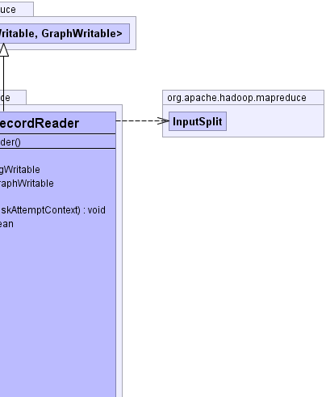
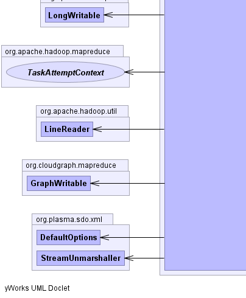
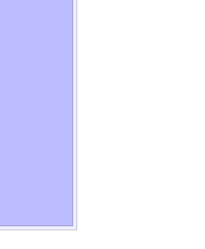

- java.lang.Object
-
- org.apache.hadoop.mapreduce.RecordReader<org.apache.hadoop.io.LongWritable,GraphWritable>
-
- org.cloudgraph.mapreduce.GraphXmlRecordReader
-
- All Implemented Interfaces:
- java.io.Closeable, java.lang.AutoCloseable
public class GraphXmlRecordReader extends org.apache.hadoop.mapreduce.RecordReader<org.apache.hadoop.io.LongWritable,GraphWritable>
An HDFS XML text file record reader that iterates over HDFS data for the currentTableSplit, unmarshalling the XML as structured data graphs based on structural and XML-specific metadata from the underlying domain model. Data graphs may be heterogeneous and of any size or complexity are supplied throughGraphXmlInputFormatincluding graphs where the underlying domain model contains instances of multiple inheritance. The unmarshalling is stream oriented and leverages the XML (StAX) parser based Plasma StreamUnmarshaller.Several job
This XML text file record reader is "line oriented" such that every HDFS line is assumed to be a single data graph marshalled as XML. Below is an example where a given data graph is being serialized as a single line.Countersare set up which accumulate various metrics related to the resulting graph, the time taken to unmarshal the XML in addition to other metrics.protected byte[] marshal(DataGraph graph) throws IOException { DefaultOptions options = new DefaultOptions(graph.getRootObject().getType().getURI()); options.setRootNamespacePrefix("c"); options.setPrettyPrint(false); XMLDocument doc = PlasmaXMLHelper.INSTANCE.createDocument(graph.getRootObject(), graph .getRootObject().getType().getURI(), null); doc.setXMLDeclaration(false); ByteArrayOutputStream os = new ByteArrayOutputStream(); PlasmaXMLHelper.INSTANCE.save(doc, os, options); os.close(); return os.toByteArray(); }- Since:
- 0.5.8
- Author:
- Scott Cinnamond
- See Also:
GraphWritable,GraphXmlInputFormat-

  
-
-
Constructor Summary
Constructors Constructor and Description GraphXmlRecordReader()
-
Method Summary
Methods Modifier and Type Method and Description voidclose()org.apache.hadoop.io.LongWritablegetCurrentKey()GraphWritablegetCurrentValue()floatgetProgress()voidinitialize(org.apache.hadoop.mapreduce.InputSplit inputSplit, org.apache.hadoop.mapreduce.TaskAttemptContext context)booleannextKeyValue()
-
-
-
Method Detail
-
initialize
public void initialize(org.apache.hadoop.mapreduce.InputSplit inputSplit, org.apache.hadoop.mapreduce.TaskAttemptContext context) throws java.io.IOException, java.lang.InterruptedException- Specified by:
initializein classorg.apache.hadoop.mapreduce.RecordReader<org.apache.hadoop.io.LongWritable,GraphWritable>- Throws:
java.io.IOExceptionjava.lang.InterruptedException
-
nextKeyValue
public boolean nextKeyValue() throws java.io.IOException, java.lang.InterruptedException- Specified by:
nextKeyValuein classorg.apache.hadoop.mapreduce.RecordReader<org.apache.hadoop.io.LongWritable,GraphWritable>- Throws:
java.io.IOExceptionjava.lang.InterruptedException
-
getCurrentKey
public org.apache.hadoop.io.LongWritable getCurrentKey() throws java.io.IOException, java.lang.InterruptedException- Specified by:
getCurrentKeyin classorg.apache.hadoop.mapreduce.RecordReader<org.apache.hadoop.io.LongWritable,GraphWritable>- Throws:
java.io.IOExceptionjava.lang.InterruptedException
-
getCurrentValue
public GraphWritable getCurrentValue() throws java.io.IOException, java.lang.InterruptedException
- Specified by:
getCurrentValuein classorg.apache.hadoop.mapreduce.RecordReader<org.apache.hadoop.io.LongWritable,GraphWritable>- Throws:
java.io.IOExceptionjava.lang.InterruptedException
-
getProgress
public float getProgress() throws java.io.IOException, java.lang.InterruptedException- Specified by:
getProgressin classorg.apache.hadoop.mapreduce.RecordReader<org.apache.hadoop.io.LongWritable,GraphWritable>- Throws:
java.io.IOExceptionjava.lang.InterruptedException
-
close
public void close() throws java.io.IOException- Specified by:
closein interfacejava.io.Closeable- Specified by:
closein interfacejava.lang.AutoCloseable- Specified by:
closein classorg.apache.hadoop.mapreduce.RecordReader<org.apache.hadoop.io.LongWritable,GraphWritable>- Throws:
java.io.IOException
-
-